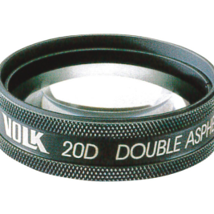
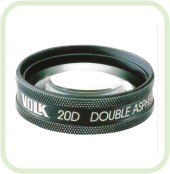
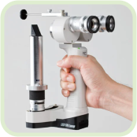
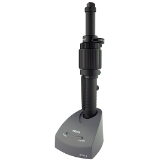

以下の症状の方はご相談ください
目が赤い
かゆい
ゴロゴロする
乾く
目やにが多い
涙が多い
ぼやける

まぶしい
影が見える等
対応疾患
-

白内障
-
緑内障
-
結膜炎
-
ドライアイ
-
涙目
-
さかまつげ
-
ものもらい
-
加齢性黄斑変性症
-
糖尿性網膜症
-
高血圧性網膜症等
EQUIPMENT
眼科訪問診療設備の例
充電式単眼倒像検眼鏡 BS-Ⅲ LED

眼底(目の奥の網膜)を照らす器械です。レンズと
セットで使用します。糖尿病網膜症、緑内障のス
クリーニング検査、散瞳検査に使用します。
眼底倒像鏡

20Dと14Dのセットを使い分けて、目の奥の網
膜、視神経乳頭(緑内障等)などを広く照らしま
す。
手持ちスリットランプ

眼の表面の角膜(ドライアイ等)、虹彩、水
晶体（白内障等）を観察する機械です。大学の一般眼
科診療の外来でも、椅子に座れない方に用いられ
ます。
眼圧計

緑内障などの診療に用いる、眼圧を測定する機械
です。痛みは全くありません。